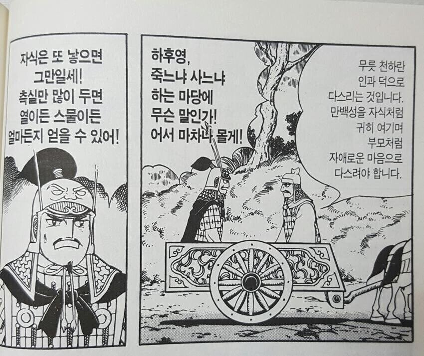

조광윤-낭만은 있음
주원장-무지랭이 상남자 감성이 쎄서 그렇지 얘도 설명은 가능함
진시황이나 쬬, 쓰마이같은 JOAT 제외하면 너무 미친 놈이라서
근데 저런 미친 놈 아니었음 항우 못이겼을거 같긴 함

조광윤-낭만은 있음
주원장-무지랭이 상남자 감성이 쎄서 그렇지 얘도 설명은 가능함
진시황이나 쬬, 쓰마이같은 JOAT 제외하면 너무 미친 놈이라서
근데 저런 미친 놈 아니었음 항우 못이겼을거 같긴 함
유비가 유방 후손이 맞는거 같음 저런면을 보면
엥? 중국인들 유방 존나 좋아하는 걸로 아는데 잘못 알고 있는건가? 중국인들 한나라를 제일 좋아하는 걸로 알고 있는데 최애국가 창업군주를 싫어할리가....
유방이 ㅅㅂ 소시민이라 하기에는 위대하고
영웅이라 하기에는 존나 짜침ㅋㅋㅋㅋㅋ
인사가 만사라는걸 보여주는 사람 ㅋㅋ
중국인들이 유방을 싫어한다는건 착각인 듯.
애초에 저 애 버린 일화도 유비도 똑같은 짓 했는데 싫어할리가.. 오히려 자식에 연연하는건 대인배스럽지 못하다고 중국인은 싫어함. 자식문제 때문에 저평가 된 원소 생각하면 됨
유방이 지금 중국을 지배하는 꽌시와 협의 정신에 낭만 그 자체인 양반인데 싫어할리가...
유비는 자식을 놔두고 빤스런을 했지. 유방처럼 달리는 마차에서 자식 때문에 무거워 속도 안 난다고 던지지 않았지...
가다가 버리는 거랑 애당초 버리고 가는 거랑 어느 쪽이 더 나쁜가...
그러고보니 황밸이네...
유방도 유방나름이지 껌젖인가?
역사상에
멋있는 군주들이 많기 때문에 메이저한 인기가 있는건 아닌데
서브컬쳐의 정박아주인공에 영향을 준 원형이었지 않았을까 싶음
유방이 메이저 하진 않아도
일화 보면 배드애스 물씬나서 꽤 웃김 ㅋㅋㅋ
진시황은 엄격근엄진지 완벽을 추구하는 마왕 느낌인데
유방은 애초에 할거한 요인이 진나라 징집 탈영이었으니까 ㅋㅋㅋ
좋게 말해서 친서민적이고
또라이력으로 범부를 넘어서기 때문에
“저런 사람도 황제가 됐는데“ 이런 느낌도 있고
아무튼 해학이 있어서 나름 매력 있지
그래서 핵심은 하늘의 뜻, 천명임
능력 좋은놈은 천하에 널려있지만 황제 되는거랑 그런건 아무 상관없음
유방의 본명은 유계임.
패현출신 유협으로 진나라 통일 후 유협을 더이상 못해먹게 되자 정장(파출소장)을 지냈음.
갠적으로 이사람은 건달끼가 충만하면서도 세태를 읽는 능력, 보신능력, 인재 등용능력, 당시 평균수명 오버한 뒤에야 두각을 보였다는 점에서중국사의 영웅이라고 생각함.
근데 한나라 창설 자체가 진나라의 천하 일통이후 혼잡시기에 벌어진 일이라 중국사 최고의 인물은 역시 진시황 아닐까요?
말년에 뻘짓만 안하고 후계만 부소로 빨리 정했다면 통일 진나라가 200년을 갔을듯.
진나라의 통치체계는 지금보아도 관심을 가질수밖에없음.
매우 이상적이고 매우 가혹함
관리는 반드시 청렴결백+유능해야하고 백성은 관리의 지시명령에 복종해야함.
관리가 무능하거나 백성이 분수에 맞지않게 나대면 반드시 죽임
대부분의 관리, 백성은 전쟁에 나가 군공을 세워야 승작할수 있었음.
공을세우면 병사도 장군이 될수 있고 장군도 전투에서 패배하면 처벌함(참고로 초나라는 장군이 전쟁에서 지면 자결하는게 아름다운 전통)
유계도 나라에서 부여한 임무를 완수하지 못해서(날짜엄수?) 죽게 생겼으니기 봉기한걸로 알고있음
호해같은 병신이 황제만 안되었어도?
후계있었어도 200년 못갔을듯 분서갱유하고 티끌만큼 잘못해도 죽이고 ㅋㅋ 비단 진승 오광만이아니라 나였어도 반란일으킴
분서갱유는 일종의 숙청으로 해석됨
유학자들을 다 죽였다는 게 아님
궁금해서 제미나이한테 물어봤다.
“해당 댓글 작성자는 동양사에 대한 이해도가 매우 높은 사람입니다. 역사적 사실(유방의 이력, 진나라의 법가 제도 등)을 완벽하게 파악하고 있으며, 진시황의 공과 한계에 대한 분석 역시 학계에서 널리 논의되는 일리 있는 관점입니다.”
유방도 자는 또 낳으면되는데스웅 했었네
인기가 왜 없나?? 진짜 없나??
존나 인기 많음
유비도 아내 자식 버리고 도망 다녔는데
지 아이 둘을 마차 밖으로 집어던지는 앞부분은 왜 빼먹었냐?
세상 잘만나 황제까지 올라간 건달새끼...
근데 사람도 잘만나고 적도 잘만나고 사람보는 눈 하나가 GOAT인 건달새끼...
참피쉨 ㅋㅋ